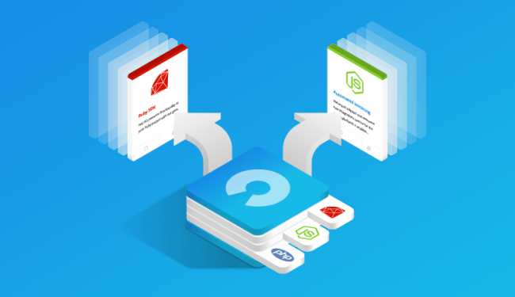

PRINCIPAL
B2B
B2C
B2E
C2C
B2G
C2G
ECOMMERCE DE PRODUCTOS DIGITALES
ECOMMERCE DE INFOPRODUCTOS
ECOMMERCE DE SERVICIOS
ECOMMERCE DE SOFTWARE AS A SERVICE
ECOMMERCE OPEN SOURCE
ECOMMERCE OPEN SOURCE
Una plataformas open source te permite tener
una web sin tener que programarla desde cero.
Tu tienda online se haría con un código previamente
programado disponible libremente para
cualquiera que quiera hacer una web. Partiendo de
código básico puede adaptaser a las necesidades
de cada tienda online.
Una plataforma Open Source de código abierto
significa que es de libre acceso, con lo que el
usuario es autónomo para manipular ese software y,
por lo tanto, una vez obtenido puede ser usado,
estudiado, cambiado y redistribuido libremente.
El objetivo del articulo es hacer un pequeño repaso
a las distintas plataformas open source gratuitas las
Pymes pueden utilizar para construir una tienda online.
